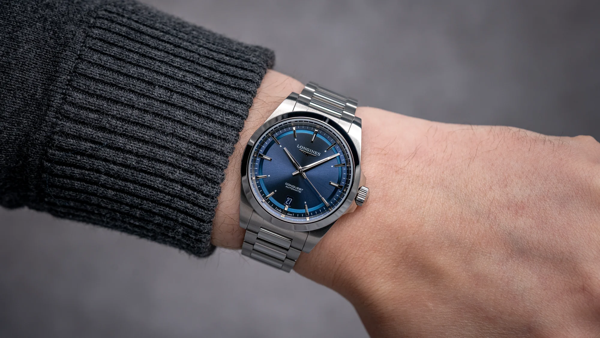
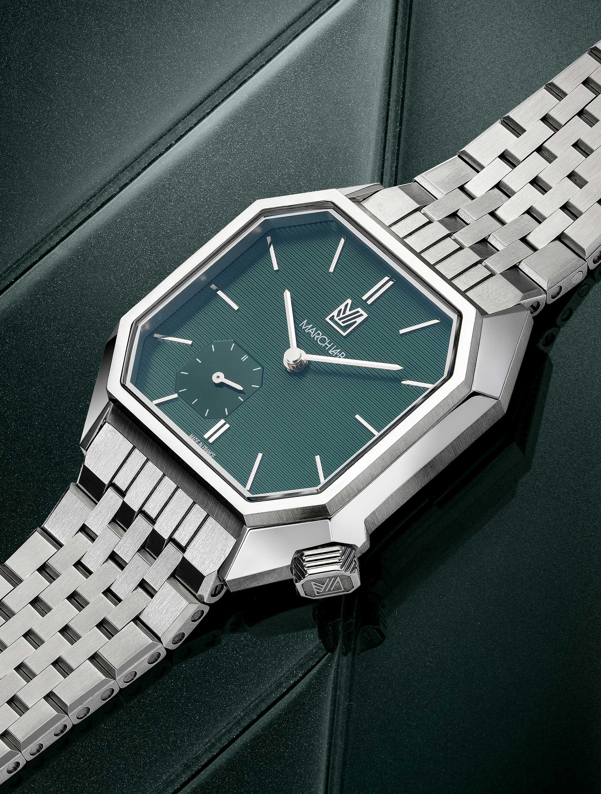
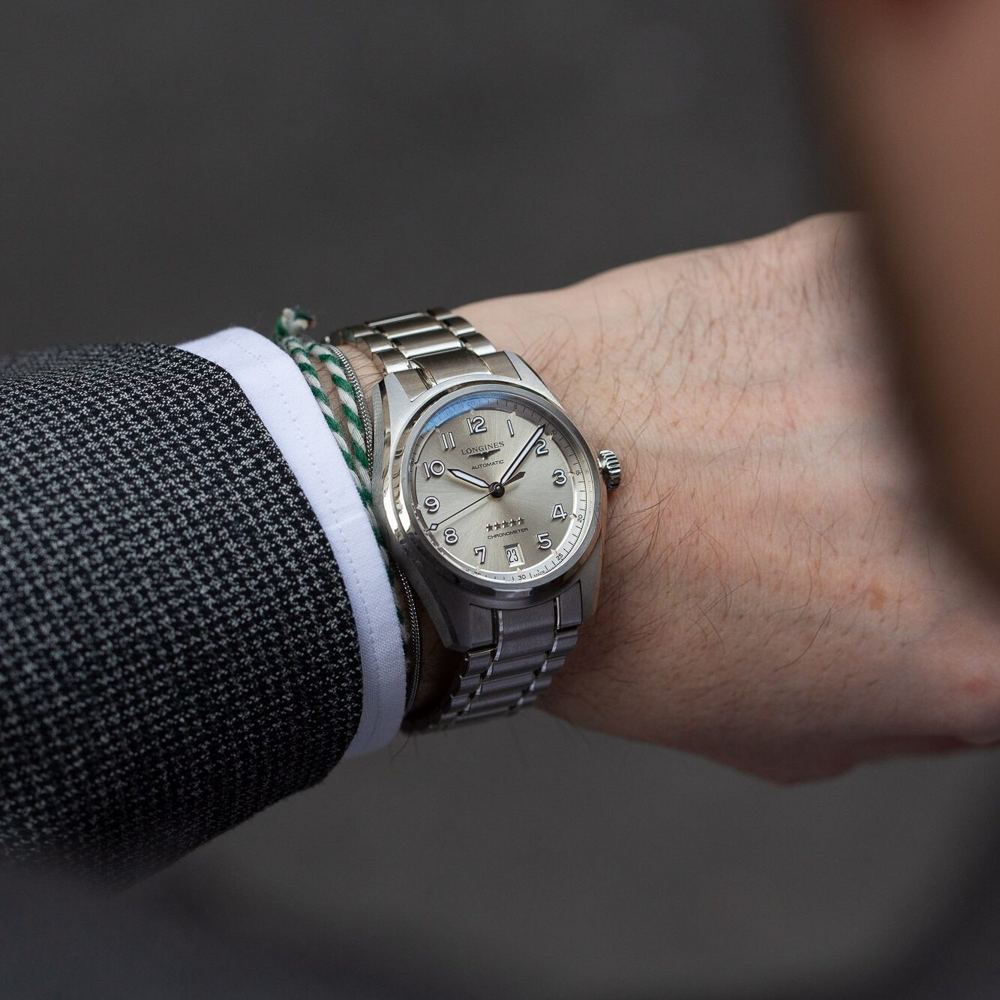
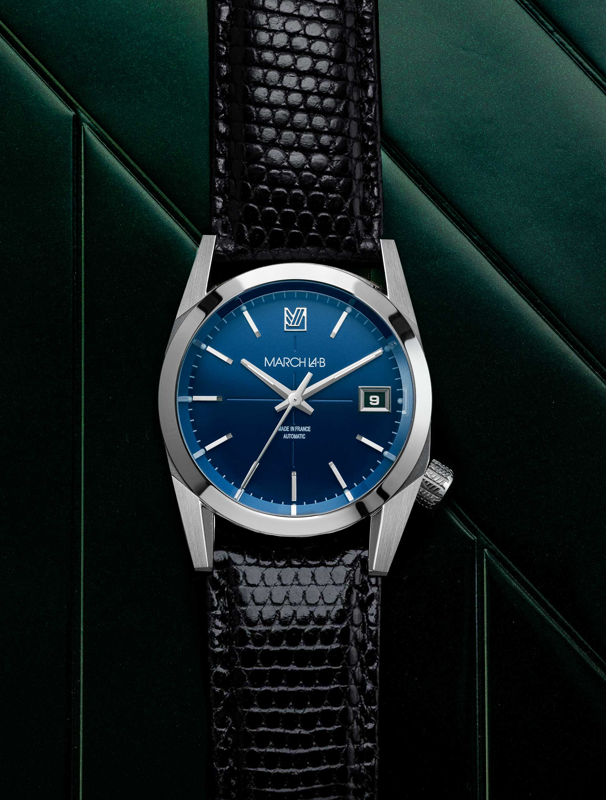
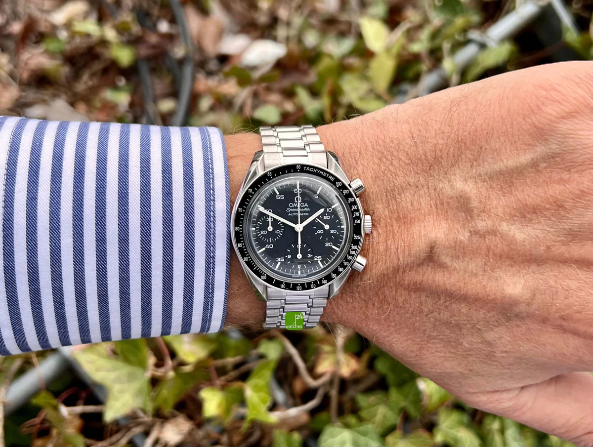
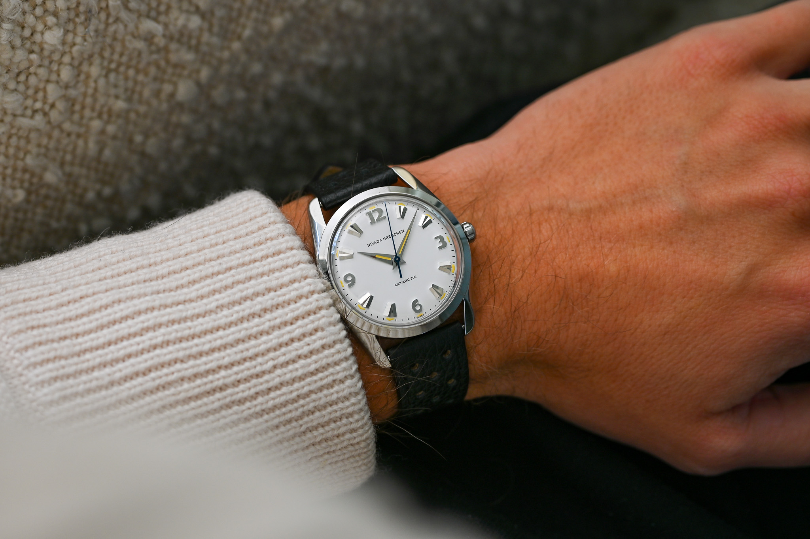
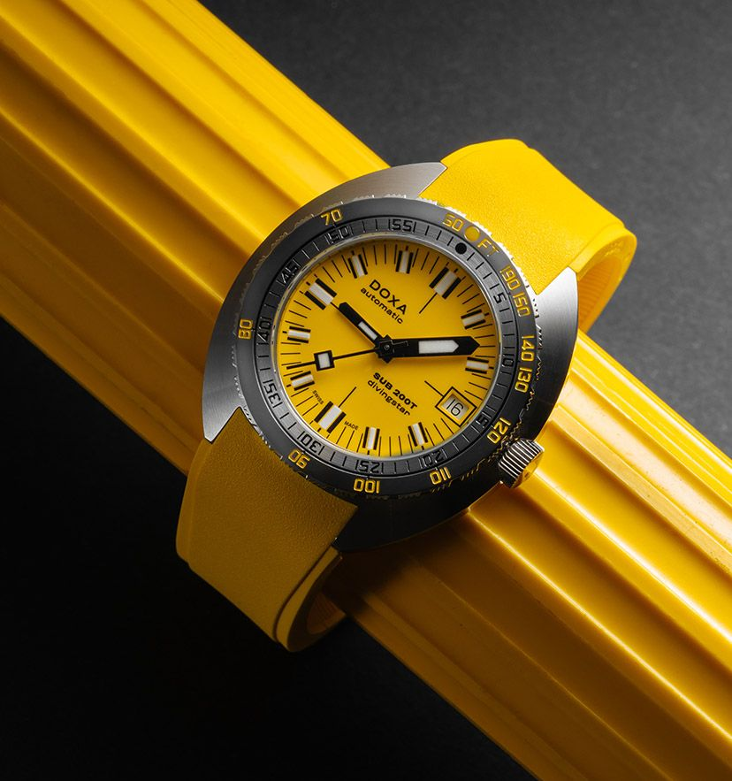

Watch Collection
A curated selection

Longines
Conquest 38mm
≈ 2350 €
Une montre sport‑chic polyvalente, parfaite au quotidien.
38 mm · 10.9 mm épaisseur · 46.5 mm L2L

March LA.B
Mansart Petite Seconde
≈ 1995 €
Son boîtier octogonal inspiré de la Place Vendôme lui donne une vraie identité.
35×39 mm · 10 mm épaisseur · 44 mm L2L

Longines
Spirit 37mm
≈ 2600 €
Inspirée des montres d’aviation, elle offre un équilibre parfait au poignet.
37 mm · 11.7 mm épaisseur · 45 mm L2L

March LA.B
AM69 Automatic
≈ 1500 €
Une montre vintage moderne, élégante et compacte.
36 mm · 11 mm épaisseur · 44 mm L2L

Frédérique Constant
Moneta Moonphase
≈ 1050 €
Une dress watch raffinée et fine, avec une jolie phase de lune.
37 mm · 9 mm épaisseur · 42 mm L2L

Omega
Speedmaster Reduced
≈ 2300 €
Version compacte de la Moonwatch, iconique et facile à porter.
39 mm · 12 mm épaisseur · 45 mm L2L

Nivada Grenchen
Antarctic 35mm
≈ 1140 €
Réédition fidèle d’un modèle historique, au charme vintage.
35 mm · 11.1 mm épaisseur · 44 mm L2L

Doxa
Sub 200T Yellow
1590 €
Une plongeuse fun, colorée et très confortable au quotidien.
39 mm · 10.7 mm épaisseur · 46 mm L2L